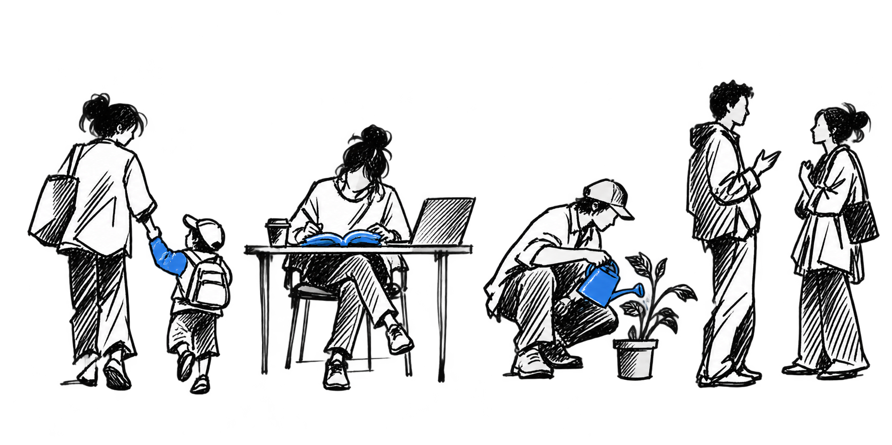
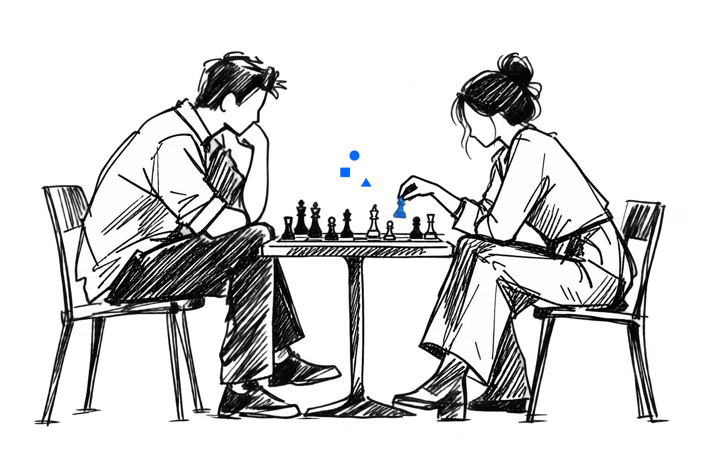

It starts subtly
You arrive at work on a Monday and find that the report which once took you two hours can now be completed in five minutes. All you have to do is describe what you need in a few sentences, wait for the screen to fill, and correct the parts that do not sound quite right.
You are thirty-two and work as a hospital operations coordinator. Your job is made up of a thousand small acts of coordination: you move appointments, prepare summaries, catch missing information, and communicate between departments that seem to speak entirely different languages. The new system does not take your position all at once. It simply learns to perform one small act, and then another.
At first, everyone is relieved to find so much more time on their hands. You leave before dark and eat dinner without checking your phone beneath the table. The system drafts the schedules and notices conflicts before you do. It never becomes tired, impatient, or distracted by the ten other things happening around it. Across the hospital, doctors receive possible diagnoses before opening a patient’s file, administrators test a dozen plans before a meeting begins, and nurses spend less time entering information into forms. For a while, it feels like the future has given everyone an hour back.
But a year passes, and you realize that the office has become strangely quiet. When two colleagues leave, they are not replaced. Their desks remain empty for several weeks before someone removes the chairs. You are still employed, but the work that remains is harder to name. You approve, correct, reassure, and appear when something unusual has happened. You spend less time producing the work and more time standing behind it. Your calendar has emptied before your life has learned what to do with the space.
This is the near future suggested by the evidence we have now. The International Labour Organization estimates that one in four workers is in an occupation with some exposure to generative AI, while emphasizing that transformation is more likely than immediate replacement.1 A job rarely disappears in a single act. It chips away. Tasks move away from the person until the title remains around a smaller center.
“What do you do?”
“I’m a hospital operations coordinator.”
“That sounds cool. What does that mean?”
You begin explaining the job, but halfway through the answer, you realize that you are describing what you used to do. Your title is still true. It simply describes slightly less than it once did. Hidden inside the question “What do you do?” are several others: What are you good at? Where do you belong? Why should other people rely on you? What part of the world has your name attached to it?
Work gives you more than wages. It gives the week a structure, places you among people who expect you, and allows you to become competent in public. If work continues to recede, the first question for society is not merely how to replace a salary. It is what should move into the space that employment leaves behind.
If paid work became less central, what would you want to take its place first?
The city becomes richer
Five years later, your hospital treats more people with fewer delays. New medicines arrive faster, and small clinics use expertise that was once available only in the largest cities. The same change can be seen in law offices, schools, laboratories, and warehouses. The country has become more productive, and the city around you has become richer. Somehow, you have not.
Your hours have been reduced, and your household now depends on several small streams of work. Meanwhile, the companies that own the models, computing centers, energy contracts, and automated firms have become some of the most valuable institutions in the country. Intelligence has become cheaper to use and more expensive to own.
This is where a technical transition becomes a political one. Productivity does not distribute itself. Economic research distinguishes between automation that replaces existing tasks, productivity that creates demand elsewhere, and new tasks that bring people back into the process.2 None of these forces guarantees that income, ownership, or bargaining power will be shared.
The government begins sending you a monthly payment. It helps. You can refuse the worst contract work and stop calculating the price of every small emergency. You sleep better knowing that one bad month will not become a disaster. But the payment also feels distant from the systems producing the wealth. You receive enough to remain secure without gaining any voice over the infrastructure on which your security now depends.
Others propose a public trust that would own part of the models, data centers, and automated enterprises. Its returns would belong to everyone. Under this arrangement, you would not receive income because you had failed to find enough work. You would receive it because public research, generations of human knowledge, and millions of ordinary lives helped make the systems possible.3 One arrangement treats you as someone who needs support. The other treats you as someone who already owns a small part of the future.
But neither answer is complete. A public fund can be captured by political interests. A job guarantee can preserve work that no longer serves anyone. A new market can create opportunities while abandoning people without savings, confidence, or connections. The society around you must decide not only how people will be paid, but what claim ordinary people should have on the intelligence their world has accumulated.
If society can produce more with less human labor, how should people receive the means to live?

Monday without a schedule
By forty-five, you work two days each week. You are still not sure whether this feels like freedom or displacement. On Tuesdays, you go to the hospital. Someone notices if you are late, a difficult case can follow you home, and your colleagues complain about the coffee, the system, and the new manager. On Mondays, there is no alarm and no request waiting for you.
During the first few months, you walk slowly to a café and watch everyone who still seems to have somewhere to be. You recognize the people with meetings from the way they look at the time. You begin to miss the mild inconvenience of being expected. You once imagined that free time would reveal a more authentic version of yourself. You thought that beneath the schedules, emails, and obligations, there was a person waiting patiently to write a novel, learn Italian, and become extremely good at making bread. Instead, your days begin to lose their edges.
The relationship between work and meaning is neither universal nor simple. For some people, a job is primarily a source of income. For others, it provides structure, recognition, community, or the feeling that someone would notice their absence.4 Replacing a salary does not automatically replace those things.
You begin spending Thursdays with your father. You organize his medication, cook enough food for several days, and listen to stories he repeats without noticing. The work is real. It requires attention, patience, judgment, and the ability to remain kind when you are tired. It is also almost invisible to the economy.
Your neighbor joins a wetland restoration group. Another person on your street begins studying mathematics at fifty. A former accountant opens a small repair room where people bring broken lamps, radios, and kitchen appliances, and no money changes hands. The neighborhood is full of effort that had always existed beneath the wage system. Once paid employment loosens its hold on the week, this hidden architecture becomes easier to see.
But a new expectation soon follows. People begin to ask whether those receiving public support should be required to serve, care, study, or create. The old belief beneath working life returns in a new form: if society is supporting you, you must prove that your day is useful. You do not want a society that preserves pointless jobs simply to keep people occupied, but you also do not want freedom to mean that everyone is left alone with an empty calendar.
In a society with much less necessary work, what should give daily life its structure?
When competence stops being rare
With part of your week now open, you return to something you abandoned as a child. You learn to draw. Your first page is awkward. The cup on the table leans slightly to the left, although the table itself is level. Its rim is too wide, its handle floats beside it like an ear attached in the wrong place, and the shadow underneath seems to belong to a different object entirely.
You know that the AI sitting inside your laptop could produce a beautiful image in seconds. It could place a porcelain cup in perfect morning light, catch the reflection of the window along its curved surface, and arrange every shadow so precisely that the image would look more real than the cup in front of you. But you do not touch it. For an hour, you look at the cup closely enough to notice the thin crack beneath the handle, the place where the glaze changes color, and the faint ring it has left on the table. The drawing is not very good, but by the time you finish, you feel as though you have finally seen the cup.
At the hospital, you make the opposite choice. When the system recognizes a dangerous pattern that you missed, you want the better answer. A patient should not receive worse care so that you can preserve the feeling of being capable. The difference between the two moments is difficult to express. In one, the result is owed to another person. In the other, the effort is changing the person who makes it.
This is where the humanist objection to AI becomes most interesting. It does not ask us to imagine only malfunction, unemployment, or catastrophe. It asks us to consider the best case. If the system is safe, fair, and extraordinarily useful, what might disappear simply because friction no longer seems necessary? The concern is not only whether the machine produces a better image, essay, or song. It is whether making, reading, writing, and practicing are among the ways a person becomes someone.5
One day, your daughter sends you a birthday letter. The sentences are uneven, one of the jokes does not quite work, and she has crossed out a word in the second paragraph and squeezed a better one above it. You keep the letter because those particular words passed through the mind of someone you love. A letter from a machine might be more elegant and might find a more beautiful way to describe your relationship. In that narrow sense, it might even be better. But it would not be the same object.
Human presence, however, cannot excuse every inferior result. A doctor, architect, or judge acts inside a relationship, but also carries responsibility for what happens next. Sometimes the value of a human act comes from the experience of doing it. Sometimes it comes from the relationship between the people involved. Sometimes it comes from having a person who can answer for the decision. And sometimes quality must win.
People once reassured themselves that humans would remain valuable by moving toward whatever AI could not yet do, but every new capability made that territory smaller. You begin to suspect that a shrinking gap is too fragile a place to build human dignity. Computers have been stronger than the best chess players for decades, yet people still play chess. The point was never only to produce the strongest possible move. People play to encounter another mind, submit themselves to the discipline of the game, and experience the move from inside it.
When AI can perform an activity better, what can still make the human act valuable?
The answer arrives too early
Your granddaughter, Leia, grows up inside a completely different relationship with intelligence. At eight, she can ask an AI tutor to explain something in any language, at any level, for as long as she needs. It never becomes embarrassed by a simple question or impatient when she asks the same thing again. It turns fractions into a catchy song, ancient history into a video series, and a difficult afternoon into a lesson designed for her alone. You watch her learn things at eight that you struggled to understand at eighteen, and it is difficult not to feel hopeful.
At fourteen, Leia submits an essay that is almost perfect. The argument is clear, the structure is careful, and each paragraph arrives exactly where it should. You read it twice and feel proud. Then you ask her which part of the argument she believes most strongly. Leia begins repeating the opening sentence, stops halfway through, and looks back at the page. She realizes that she does not know.
The problem is not that she cheated. Her school expects students to use AI. She chose the topic, collected the sources, and edited the final answer. The problem is that the answer arrived before the question had become fully hers.
AI can help a person think in two very different ways. It can ask Leia what she means, show her where two ideas contradict each other, and wait while she tries again. In that case, the system helps her reach further while leaving the thinking in her hands. Or it can resolve the contradiction, construct the argument, and present the finished thought before she has experienced the confusion that made the thought necessary. The first approach leaves Leia more capable. The second leaves her with a better page. From the outside, the final essays may look identical. The difference exists inside the person who submitted them.
Fluent language is not the same as meaning or understanding.6 When answers become cheap, the ability to question an answer, verify it, and decide whether to accept responsibility for it becomes more valuable.
You do not want Leia to reject the AI tutor. It gives her access to knowledge that earlier generations distributed according to wealth, geography, and luck. You simply want her to possess enough of her own mind to recognize when the tutor is wrong, when the question has been poorly formed, and when a correct answer is not a sufficient one. The society around her must decide which difficulties are merely inefficient and which ones help form the person who will later be asked to judge.

The question that remains
You are now eighty-two, sitting near the window with Leia. The city outside is wealthier, stranger, and more capable than the one you knew at thirty-two. Some of its choices were generous. Others were postponed until postponement became a choice of its own. Leia asks what people were afraid of at the beginning.
You could tell her that people were afraid of losing their jobs, their privacy, or control of the systems. All of this was true. Beneath those practical fears, however, was a more private one. It had been buried inside the way people understood intelligence, achievement, and their own place in the world: if our abilities no longer set us apart, what will?
You think of your first free Monday, your father repeating a story, the crooked cup you learned to draw, and the imperfect letter you kept. Human beings live inside bodies that become tired, sick, and old. They love particular people rather than the most capable person available. They inherit responsibilities they did not choose and experience time from only one direction. Perhaps these things will remain different, yet difference can become another competition if its only purpose is to place humanity above everything else.
An infant does not earn care by demonstrating useful abilities. A person who becomes ill does not lose value when they can no longer work. Someone does not deserve less dignity because another person is more intelligent, creative, productive, or strong. Human-rights traditions begin with this refusal to make dignity depend on performance.7 If ability does not determine worth among human beings, the arrival of a more capable intelligence should not suddenly make it do so.
This does not make ability unimportant. You still wanted to learn, create, improve, and become excellent. But excellence did not need to mean superiority over every possible competitor. It could mean deepening a capacity, honoring a commitment, or becoming more able to care for something that mattered.
Leia waits for your answer. You look at her and say, “Perhaps the difficult part was never discovering what would remain uniquely human. It was learning whether we could value a life without requiring it to win.”
Does something need to remain uniquely human for human life to remain valuable?
The future your choices create
Scenario forming
Six decisions stand between you and a future.
Finish the essay to see how your choices about work, wealth, time, ability, judgment, and human value combine into a possible society.
The values shaping this future
What this future protects
What it risks
The question it cannot answer
This is not a prediction or a personality type. It is one coherent future produced by the priorities you chose. Change any answer to test another one.